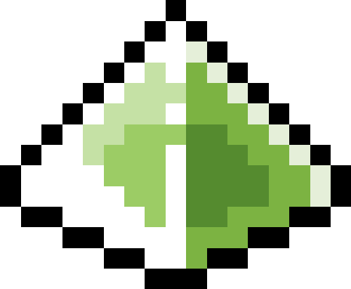
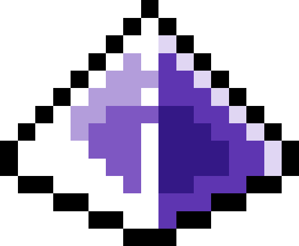
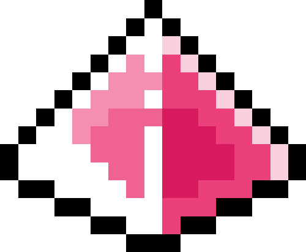
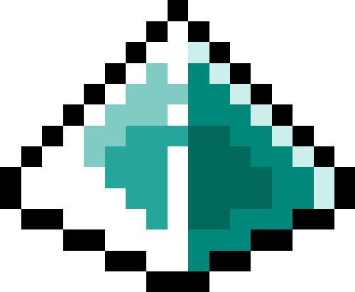

| 星状細分によるマトロイドのチャウ環のポアンカレ双対性，Arrangement Workshop in Sapporo 2026，北海道大学，2026年4月。リンク | ||
 |
星状細分によるマトロイドのチャウ環のポアンカレ双対性，トロピカル幾何とその周辺，九州大学，2026年3月。リンク | |
 |
頂点荷重付きグラフの岩澤理論，第9回数理新人セミナー，名古屋大学，2026年2月。リンク | |
| Iwasawa theory for vertex-weighted graphs，名古屋-関西ゼータ若手研究集会，名古屋大学，2026年2月。リンク | ||
 |
組合せ論的ホッジ理論勉強会（第1回），大阪大学，2025年8月。リンク | |
| Iwasawa theory for vertex-weighted graphs，NCTS Tropical Geometry in Taiwan 2025，国立台湾大学，2025年8月。リンク | ||
 |
Iwasawa theory for vertex-weighted graphs，第24回仙台広島整数論集会，東北大学，2025年7月。リンク | |
| マトロイドと代数幾何学，第８回数理新人セミナー，名古屋大学，2025年2月。 リンク |